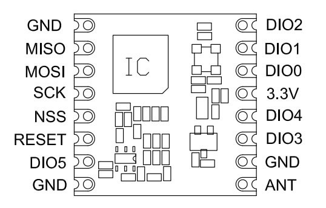

Although there are now ways to get the full LMIC stack implemented in the ATmega 328 based MCU's, the GPS code is still to large to fit into that combinations. Therefore the TeensyLC has been selected as that platform more or less behaves equal to the other Arduinos yet has more program memory and RAM memory.
So let's make our own mini node based on a cheap Arduino Pro-Mini MCU ($ 2.00 on Aliexpress), a HopeRF95, a HTU21d temperature/humidity sensor ($4.00) and some resistors. Based on the LoRaWAN software and library sketches it should be possible to make your own "Thing".

And the Arduino Pro-Mini looks like this. It's pin out is clearly marked on the outside of the board (that is, until I start to solder pin's to it).
The pin-out of a TeensyLC using the LMIC stack is documented on the forum.thethingsnetwork.org. Pin-out for use with an Teensy (Arduino IDE).
| TeensyLC | Teensy Pin | RFM95 | Color | Comment |
|---|---|---|---|---|
RX2 |
9 | RESET | -- | |
| VCC | 3.3V | red | ||
| GND | GND | |||
| D2 | 2 | DIO0 | ||
| D5 | 5 | DIO1 | ||
| D6 | 6 | DIO2 | ||
| 3 | -- | DS18B20 data pin | ||
| TX2 | 10 | NSS | ||
| MOSI0 | 11 | MOSI | ||
| MISO0 | 12 | MISO | ||
| SCK0 | 13 | SCK |
As you can see in the picture of the Arduino ProMini below (actual boards might differ a bit) we need pins at both sides of the board so left of right orientation of the RFM95 is less important.
There are special adapter cards and boards available for tge RFM95w, but if we would wire and solder connections we need 10 wires.
I soldered some jumpers (cut in half) to the RFM95 board to be able to test and experiment with the setup.
I left enough wire to make connection to the breadboard simple. But it looks like **** and it did not take much time before I decided to cut the wires really short and solder them directly to an Arduino Pro-Mini.
As you can see, it is possible to make a real small sensor.
If we would like to make a simple node that can report temperature and humidity and runs on normal batteries we need to do some special tings as well:
Please read on Page 2 how to transform the node to a sensor